AL0015 · 原文分段阅读
原文放大 1/1 · 历史窗口与预测窗口

对应「历史窗口与预测窗口」（本版第6页，原201版第4页）。来源为PDF第3页；保留原文顺序，重叠行供连续阅读。
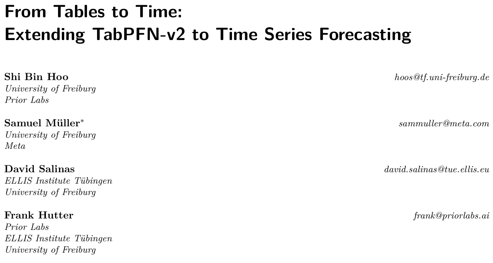
AL0015 · TabPFN-TS：用表格基础模型预测时间序列
Hoo、Müller、Salinas、Hutter
固定讲解 arXiv:2501.02945v4，2026-01-26。
1. 预测任务、时间特征与概率输出
2. 频谱提取、相位机制与逐步手算
3. 基准对照、消融、失败案例与所有附录图表
4. 设备与微生物时序研究设计、复现边界
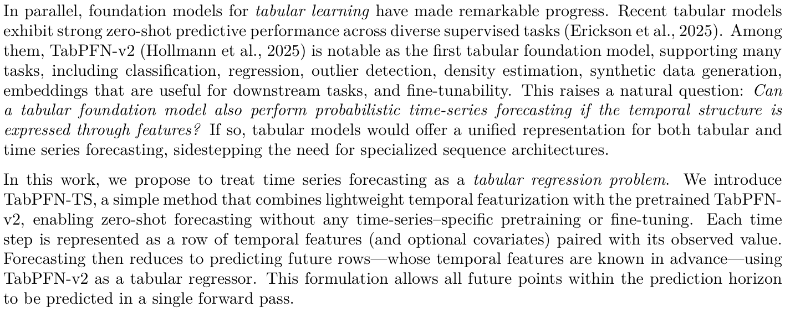
序列模型常以目标历史为主要输入。已知节日、价格或控制输入还包含未来变化的信息。
本文把每个时刻变成一行特征，把观测目标放在标签列。未来行的时间特征已知，标签待预测。
这使预训练表格回归模型可以直接接收时间和协变量，省去时间序列专用预训练。
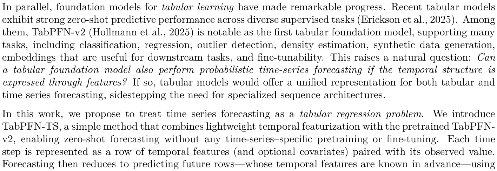
对应「时间戳和外部条件都可以进入回归表」（本版第3页，原201版第3页）。来源为PDF第2页；保留原文顺序，重叠行供连续阅读。
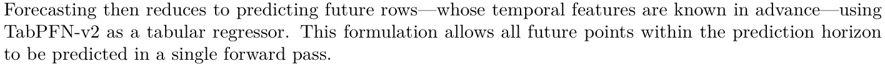
对应「时间戳和外部条件都可以进入回归表」（本版第3页，原201版第3页）。来源为PDF第2页；保留原文顺序，重叠行供连续阅读。
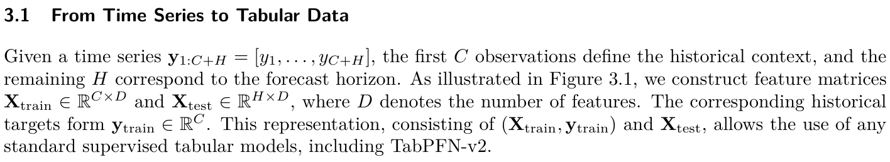
C是历史长度，H是预测长度，D是每行特征数。历史标签y₁:C有C个数。
Xtrain形状为C×D，Xtest为H×D。未来标签yC+1:C+H始终隐藏。
§2写成yC+1:H，与§3定义不一致。本课件采用§3的C+H终点。
对应「历史窗口与预测窗口」（本版第6页，原201版第4页）。来源为PDF第3页；保留原文顺序，重叠行供连续阅读。
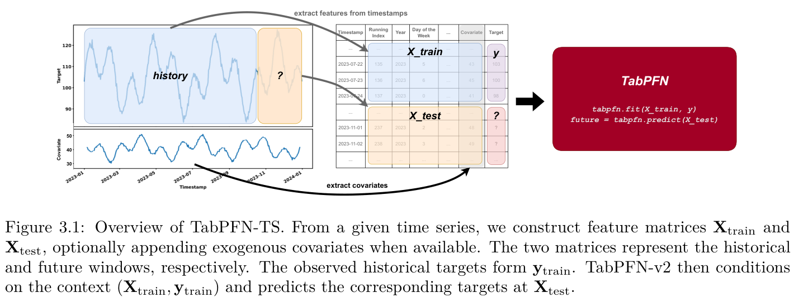
先看历史、特征矩阵与回归器的连接，再逐块检查信息流。
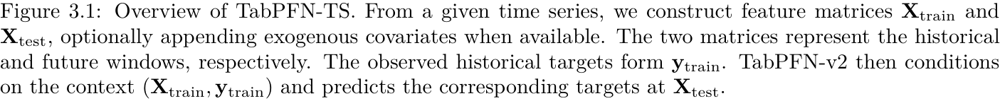
对应「图3.1｜从时间序列到回归表」（本版第8页，原201版第5页）。来源为PDF第4页；保留原文顺序，重叠行供连续阅读。
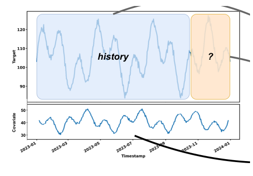
蓝色区域是可观察历史，橙色区域是待预测未来；下方协变量轨迹可在已知时加入。
窗口划分沿时间进行，不能随机把未来目标混入训练标签。
历史目标构成训练标签y；同一套时间特征分别为历史窗口生成X_train、为预测窗口生成X_test。图中的未来目标是问号，不能作为特征回填。
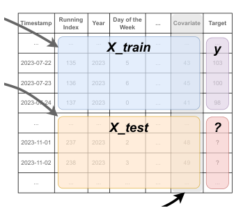
上半部X_train与历史标签y配对，下半部X_test沿用相同列定义。
表的每行代表一个时间点，列包含时间信息以及可选协变量。
时间戳可变成运行索引与周期特征；未来已知的协变量可追加到表中。TabPFN在历史行的条件下，一次预测未来各行。
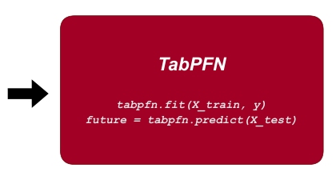
图中先调用fit(X_train,y)，再调用predict(X_test)。
这里的fit用于建立上下文，不等于针对该时间序列重新做参数训练。
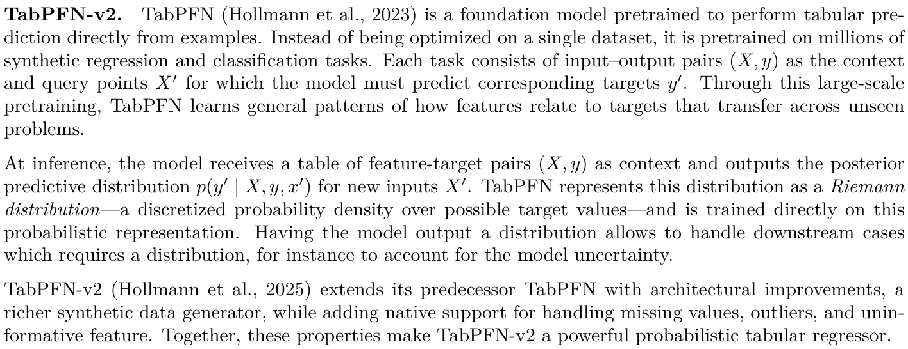
预训练在大量合成表格任务上进行，学习上下文与查询行之间的预测关系。
推断把(Xtrain,ytrain)交给已有模型作为上下文。图3.1的fit调用不能理解为重新用这条时间序列训练模型参数。
每个未来行得到条件预测分布。一次预测整个窗口，并不自动证明模型给出了完整的跨时间联合分布。
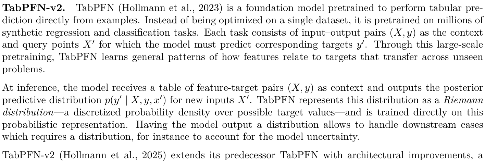
对应「推断时的fit与预训练」（本版第13页，原201版第9页）。来源为PDF第3页；保留原文顺序，重叠行供连续阅读。
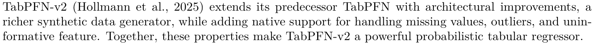
对应「推断时的fit与预训练」（本版第13页，原201版第9页）。来源为PDF第3页；保留原文顺序，重叠行供连续阅读。
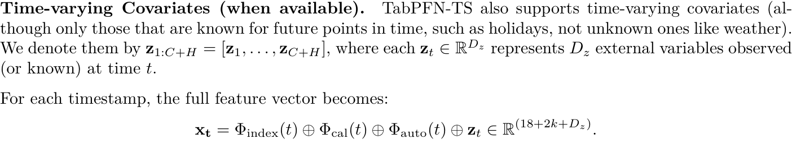
索引占1维。8类历法分量各用sin/cos两维，另加年份，共17维。
k个自动季节周期最多占2k维，未来已知协变量占Dz维。
D=18+2k+Dz。k=5时最多为28+Dz；若去重后不足5个周期，实际季节特征会更少。

对应「四类特征和总维数」（本版第16页，原201版第10页）。来源为PDF第4页；保留原文顺序，重叠行供连续阅读。
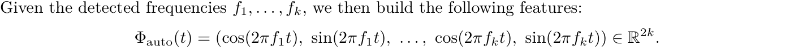
频率f=1/4时，角度为2πt/4，t是等间隔采样索引。
t=0,1,2,3的(cos,sin)依次为(1,0)、(0,1)、(−1,0)、(0,−1)。
t=4回到(1,0)，t=5回到(0,1)。未来时刻在相位空间可以回到历史位置。
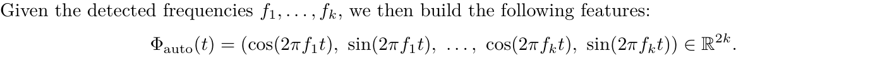
对应「周期4的时间特征手算」（本版第18页，原201版第11页）。来源为PDF第4页；保留原文顺序，重叠行供连续阅读。

未来节假日与计划控制量可作为输入，未来实际天气或实际传感器读数通常不可直接获得。
如果使用天气预报，需要保留预测发布时刻与版本。事后观测天气不是同一种信息条件。
协变量必须覆盖历史与预测窗口。缺少未来值时，不能照原方法完整条件化。
对应「未来已知协变量的输入边界」（本版第20页，原201版第12页）。来源为PDF第4页；保留原文顺序，重叠行供连续阅读。

所有未来时间戳的索引、历法与季节特征可以一次构造。已知协变量也可直接拼接。
本文不加入移动平均或滞后目标项，避免后续行必须等待前一步预测。
省去自回归循环不等于推断一定便宜。每条序列仍要单独使用上下文，注意力计算有成本。
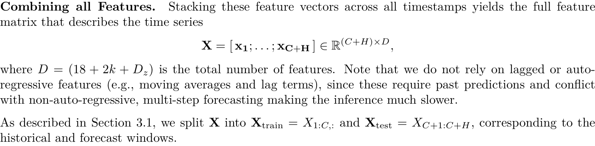
对应「全窗口预测为何不需要滚动标签」（本版第22页，原201版第13页）。来源为PDF第5页；保留原文顺序，重叠行供连续阅读。
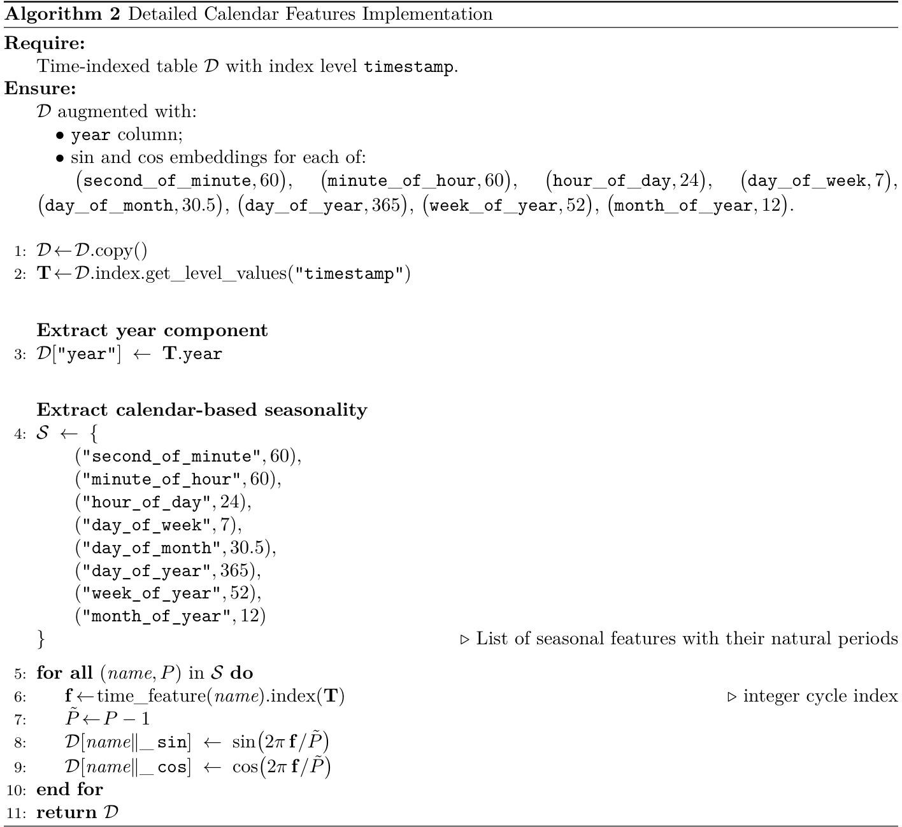
输入带时间戳的表，输出年份与16个周期特征。以下两页分别展开周期列表和分母差异。
对应「算法2完整总览」（本版第24页，原201版第14页）。来源为PDF第16页；保留原文顺序，重叠行供连续阅读。
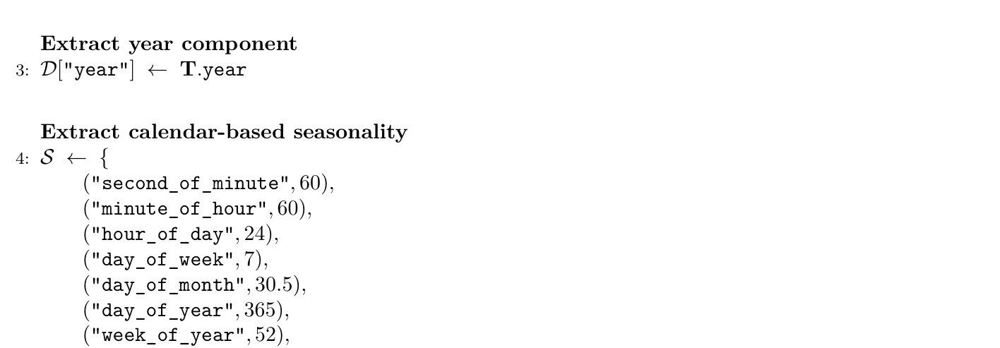
对应「算法2完整总览」（本版第24页，原201版第14页）。来源为PDF第16页；保留原文顺序，重叠行供连续阅读。
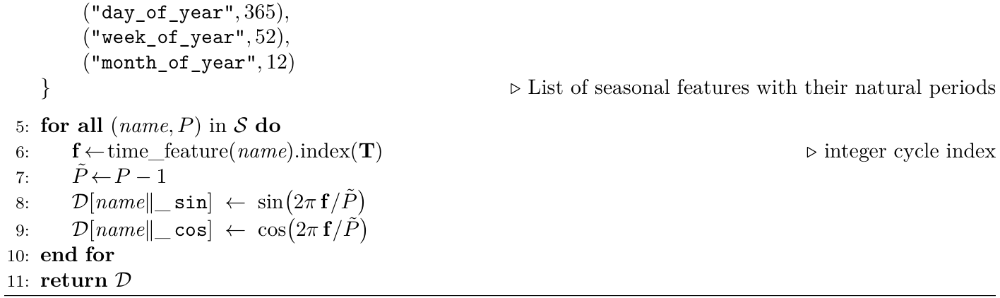
对应「算法2完整总览」（本版第24页，原201版第14页）。来源为PDF第16页；保留原文顺序，重叠行供连续阅读。
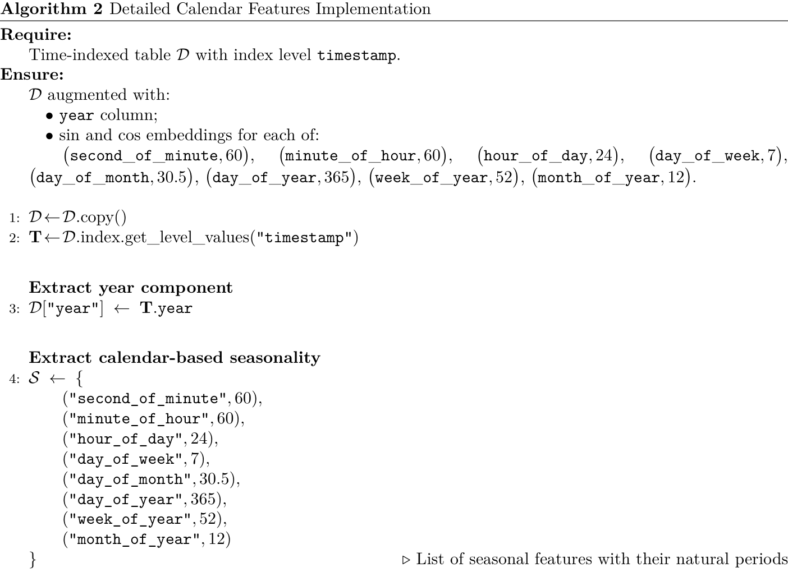
秒、分、小时、星期、月内日、年内日、年内周、月份各提供一对sin/cos。年份单列保留。
算法列出的P依次为60、60、24、7、30.5、365、52、12。
月长与闰年变化意味着这些编码是近似的周期表示。具体索引约定会影响相位。
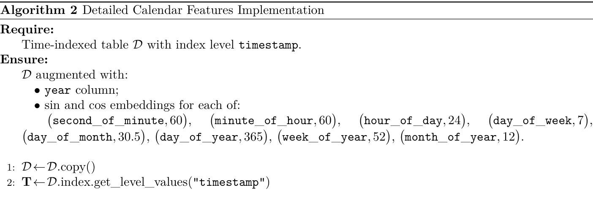
对应「历法特征的8个周期」（本版第28页，原201版第15页）。来源为PDF第16页；保留原文顺序，重叠行供连续阅读。
对应「历法特征的8个周期」（本版第28页，原201版第15页）。来源为PDF第16页；保留原文顺序，重叠行供连续阅读。
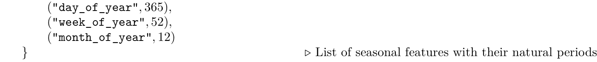
对应「历法特征的8个周期」（本版第28页，原201版第15页）。来源为PDF第16页；保留原文顺序，重叠行供连续阅读。
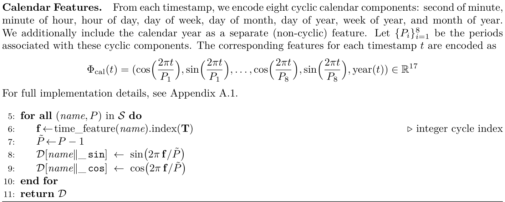
正文公式用2πt/P，算法2先计算P̃=P−1，再用2πf/P̃。
例如星期索引0和6：用P=7时相位不同，用P−1=6时两者都落在(1,0)。
因此不能静默把两种写法统一。复现时需核对固定代码提交的具体实现。
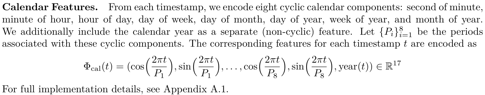
对应「正文P与算法2的P−1不一致」（本版第32页，原201版第16页）。来源为PDF第4页；保留原文顺序，重叠行供连续阅读。
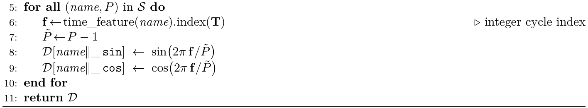
对应「正文P与算法2的P−1不一致」（本版第32页，原201版第16页）。来源为PDF第16页；保留原文顺序，重叠行供连续阅读。
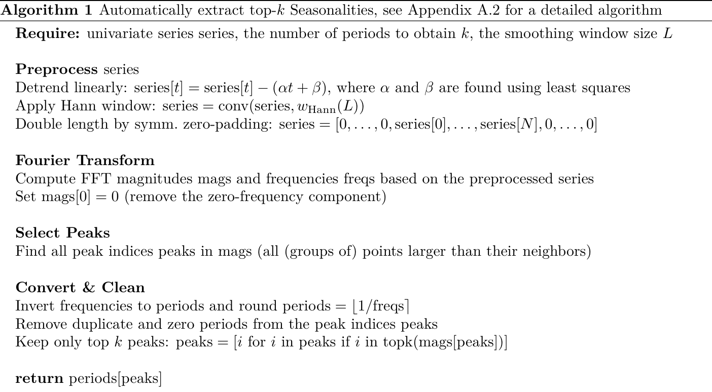
输入只有历史单变量序列、最大周期数k与窗口长度L。先去趋势、Hann处理、补零。
再算频谱幅值，去除DC分量，找局部峰。把频率取倒数并四舍五入成周期。
去重并去掉零周期，最后保留幅值最大的k个峰。未来标签不能参与选峰。
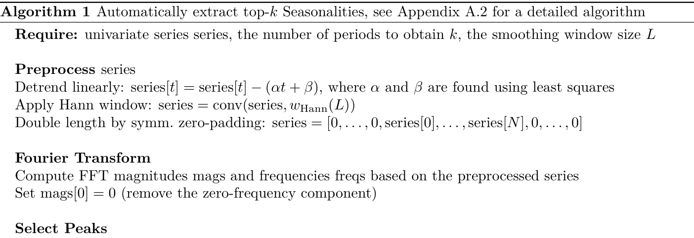
对应「算法1：从历史标签提取主周期」（本版第35页，原201版第17页）。来源为PDF第5页；保留原文顺序，重叠行供连续阅读。
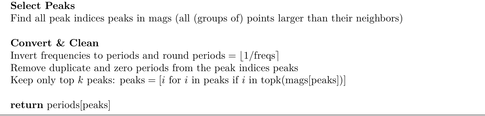
对应「算法1：从历史标签提取主周期」（本版第35页，原201版第17页）。来源为PDF第5页；保留原文顺序，重叠行供连续阅读。
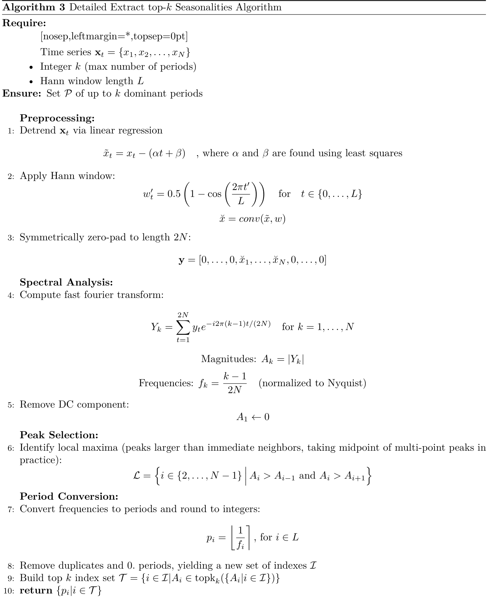
输入历史序列、k和L，输出至多k个周期。以下五页逐段说明公式、单位和计算。
对应「算法3完整总览」（本版第38页，原201版第18页）。来源为PDF第17页；保留原文顺序，重叠行供连续阅读。
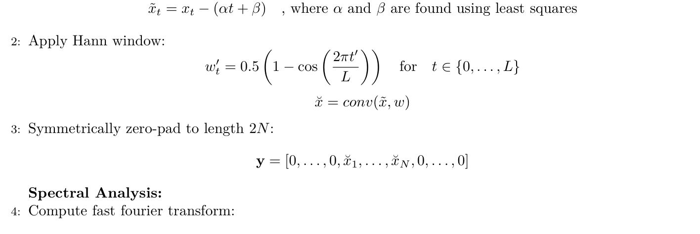
对应「算法3完整总览」（本版第38页，原201版第18页）。来源为PDF第17页；保留原文顺序，重叠行供连续阅读。
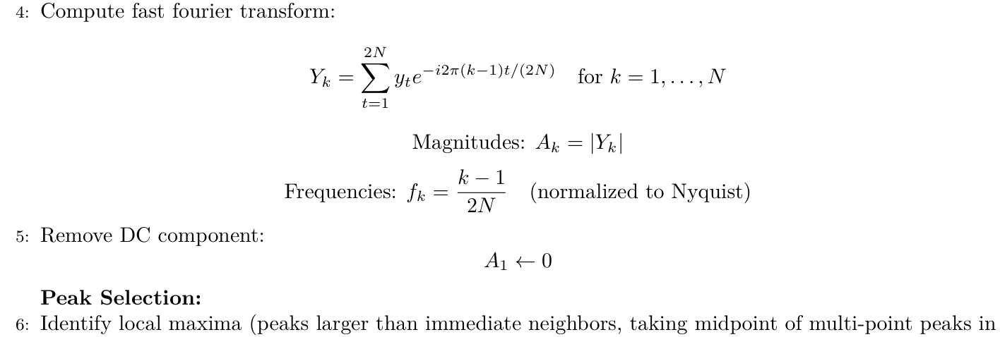
对应「算法3完整总览」（本版第38页，原201版第18页）。来源为PDF第17页；保留原文顺序，重叠行供连续阅读。
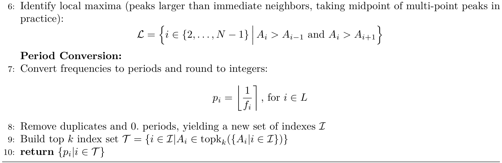
对应「算法3完整总览」（本版第38页，原201版第18页）。来源为PDF第17页；保留原文顺序，重叠行供连续阅读。
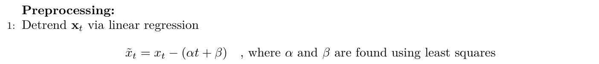
以t=0,1,2,3，y=1,3,3,5为教学输入，均值t̄=1.5、ȳ=3。
最小二乘斜率α=Σ(t−t̄)(y−ȳ)/Σ(t−t̄)²=6/5=1.2，截距β=1.2。
拟合趋势为1.2,2.4,3.6,4.8，残差为−0.2,0.6,−0.6,0.2。频谱分析使用残差。

对应「线性去趋势的具体计算」（本版第43页，原201版第19页）。来源为PDF第17页；保留原文顺序，重叠行供连续阅读。
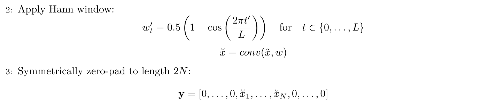
原文写w(t′)=0.5[1−cos(2πt′/L)]，并明确写conv(x̃,w)。
这是一种卷积写法，不应擅自改成惯常频谱处理中逐点乘窗。卷积边界与归一化还需对应实现核对。
随后对称补零到2N。补零使频率采样网格更密，不会创造新的观测信息。

对应「Hann处理与补零」（本版第45页，原201版第20页）。来源为PDF第17页；保留原文顺序，重叠行供连续阅读。

Yk是补零序列与复指数的内积，Ak=|Yk|记录该频率分量幅值。
公式fk=(k−1)/(2N)以每采样点的周期数为单位。旁注normalized to Nyquist与该数式单位不一致。
DC对应均值，作者将其幅值置零，避免把常数水平识别成季节变化。
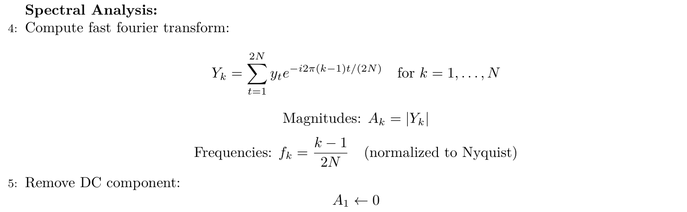
对应「FFT、频率与DC分量」（本版第47页，原201版第21页）。来源为PDF第17页；保留原文顺序，重叠行供连续阅读。
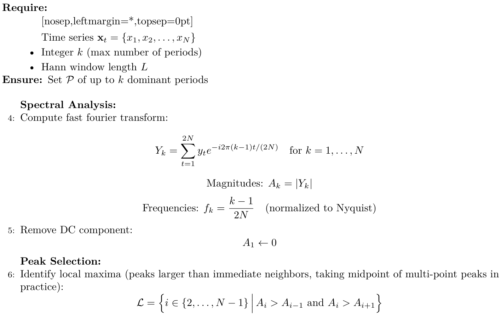
输入k表示最多保留的周期数，频谱公式又用k作频率索引。频率手算中的k=5指第5个格点，不是取5个周期。
N表示补零前序列长度。L原先表示Hann窗长度，找峰公式又用L表示峰的索引集合，二者不能混用。
伪代码列出频率索引1至N，找峰时排除两端。实际实数FFT的端点、返回数组和峰值索引必须按固定实现核对。
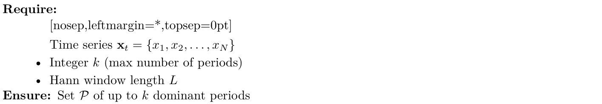
对应「算法3的符号复用与端点约定」（本版第49页，原201版第22页）。来源为PDF第17页；保留原文顺序，重叠行供连续阅读。
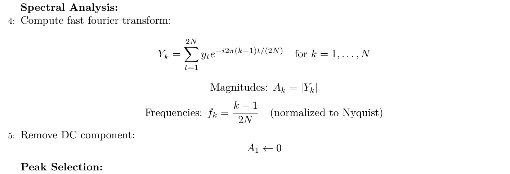
对应「算法3的符号复用与端点约定」（本版第49页，原201版第22页）。来源为PDF第17页；保留原文顺序，重叠行供连续阅读。
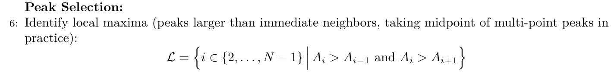
对应「算法3的符号复用与端点约定」（本版第49页，原201版第22页）。来源为PDF第17页；保留原文顺序，重叠行供连续阅读。
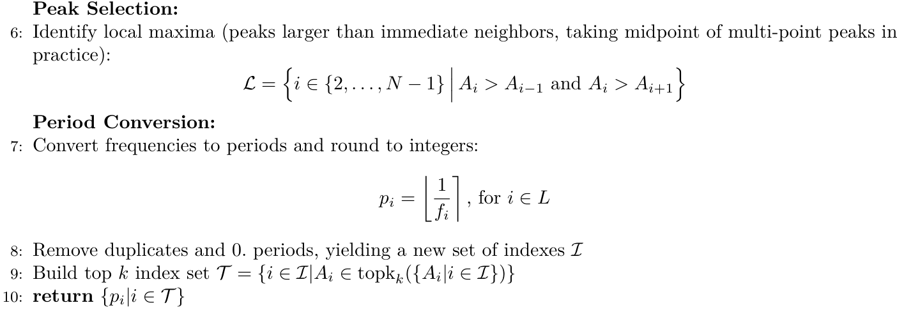
只在局部峰中筛选，不是从所有频率格点直接选最大值。平台峰在实现中取中点。
先把1/f四舍五入成整数周期，去重后再保留最大k个峰，得到至多k个周期。
舍入会损失非整数周期精度。k=5是本文固定配置，尚未系统评估所有k。
对应「峰值、整数周期与去重」（本版第53页，原201版第23页）。来源为PDF第17页；保留原文顺序，重叠行供连续阅读。
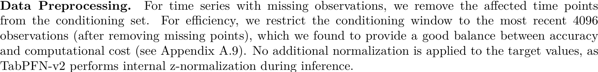
每个预测起点仅用当时可见历史做缺失处理、截取上下文与周期提取。
删除缺失观测后最多保留最近4096个点。不能把剩余点误当原本连续的时间戳。
目标不额外做归一化，TabPFN-v2内部进行z归一化。整个测试区间的均值不能提前用于标准化。
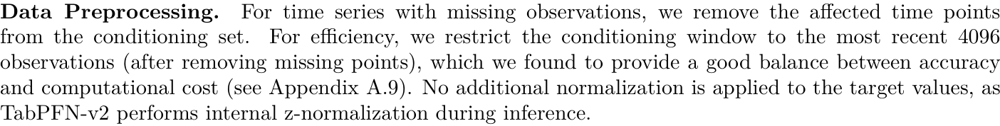
对应「训练与测试特征的防泄漏顺序」（本版第55页，原201版第24页）。来源为PDF第18页；保留原文顺序，重叠行供连续阅读。
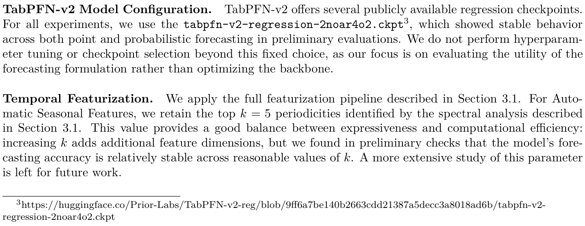
检查点是tabpfn-v2-regression-2noar4o2.ckpt，原文给出固定Hugging Face提交链接。
作者在初步评估后固定这一选择，没有为每个基准任务另行超参数调优。
自动季节保留top k=5。论文称合理范围内初查较稳定，系统k敏感性分析仍待后续研究。
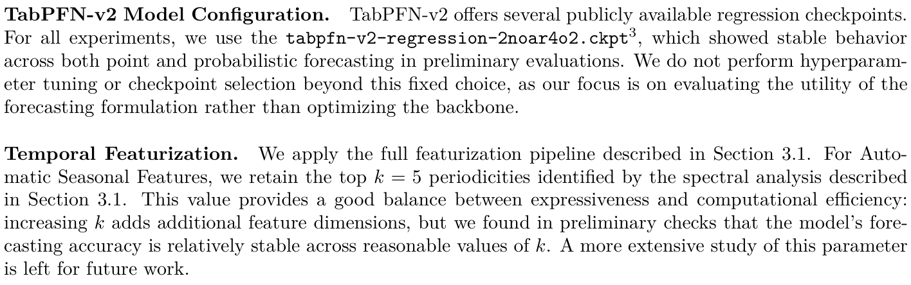
对应「固定检查点与季节数」（本版第57页，原201版第25页）。来源为PDF第18页；保留原文顺序，重叠行供连续阅读。
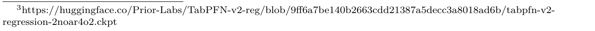
对应「固定检查点与季节数」（本版第57页，原201版第25页）。来源为PDF第18页；保留原文顺序，重叠行供连续阅读。
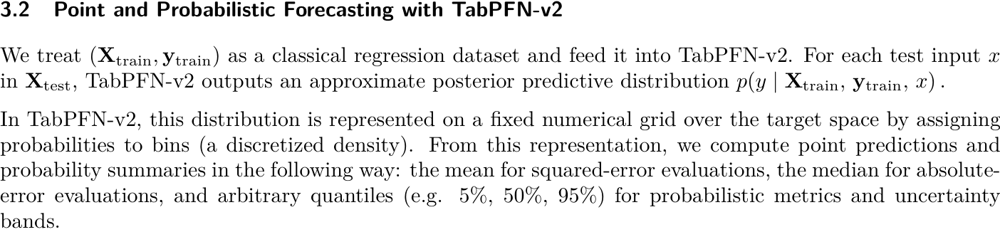
TabPFN-v2给目标数值区间分配概率，形成离散化密度。每个未来行均有自己的分布。
均值适合平方误差，中位数适合绝对误差，分位数用于概率损失或区间展示。
概率预测必须评估校准和误差，不能仅凭输出了区间就称其可靠。
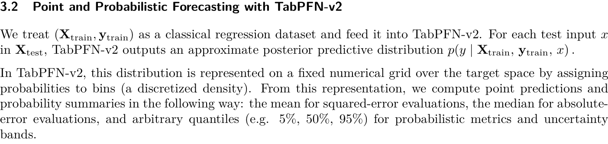
对应「概率网格到均值」（本版第60页，原201版第26页）。来源为PDF第5页；保留原文顺序，重叠行供连续阅读。
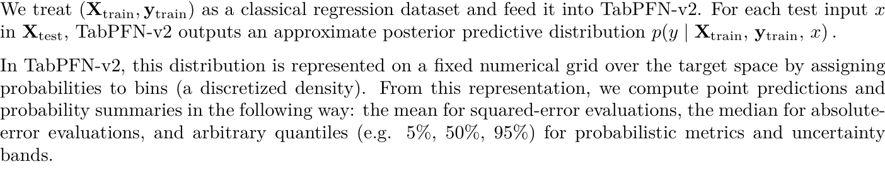
上一页累积质量为0.2、0.7、1。中位数落在第二格：1+(0.5−0.2)/0.5=1.6。
10%分位数为0.1/0.2=0.5，90%分位数为2+(0.9−0.7)/0.3≈2.667。
这是单时刻80%中心预测区间。多个时刻各有80%区间，不等于整条路径同时覆盖率也是80%。
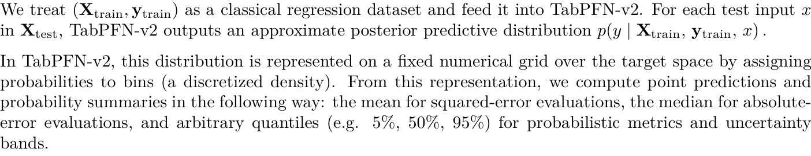
对应「分位数手算与跨时刻限制」（本版第62页，原201版第27页）。来源为PDF第5页；保留原文顺序，重叠行供连续阅读。

θ=π/6与5π/6的sin都为1/2。只给sinθ，模型无法区分两个时刻。
对偶次谐波sin2θ，两个标签分别为√3/2和−√3/2，同一输入对应相反标签。
奇次谐波满足sin[n(π−θ)]=sin(nθ)，偶次则变号。奇偶差别来自信息丢失。

对应「sin单特征的相位碰撞」（本版第64页，原201版第28页）。来源为PDF第10页；保留原文顺序，重叠行供连续阅读。

加入cosθ后，上例两个输入变为(1/2,√3/2)与(1/2,−√3/2)，可以区分。
sin2θ=2sinθcosθ。因此第二谐波成为输入特征上的确定函数，表格回归能学习这种关系。
唯一性仅成立于模2π的相位，不是全时间轴的一一对应。周期重复依然发生。
对应「sin/cos对保留模2π的相位」（本版第66页，原201版第29页）。来源为PDF第10页；保留原文顺序，重叠行供连续阅读。
两种时间表示并列，后续按连续频率组覆盖全部48条曲线。
对应「图5.2｜单正弦与正余弦表示」（本版第68页，原201版第30页）。来源为PDF第9页；保留原文顺序，重叠行供连续阅读。
每条曲线依右侧标签表示sin(nt)，由下到上n从1增加至24。
仅sin(t)时相同输入值可能对应不同相位；增加cos(t)后可在一个周期内区分相位。
左图仅以sin(t)为输入，偶数谐波在未来段重建失败；右图同时提供sin(t)与cos(t)，1–24阶谐波的重建更完整。
本组依次包含sin(1t)至sin(4t)，原图通过竖向错开曲线避免覆盖。
左侧表示仅给sin(t)：本组奇数阶保留振荡，偶数阶重建受损，反映相位歧义。
纵向位移只是分开展示不同频率，不是信号均值随阶数增长；竖线为训练/测试分界。
本组依次包含sin(5t)至sin(8t)，原图通过竖向错开曲线避免覆盖。
左侧表示仅给sin(t)：本组奇数阶保留振荡，偶数阶重建受损，反映相位歧义。
本组依次包含sin(9t)至sin(12t)，原图通过竖向错开曲线避免覆盖。
左侧表示仅给sin(t)：本组奇数阶保留振荡，偶数阶重建受损，反映相位歧义。
本组依次包含sin(13t)至sin(16t)，原图通过竖向错开曲线避免覆盖。
左侧表示仅给sin(t)：本组奇数阶保留振荡，偶数阶重建受损，反映相位歧义。
本组依次包含sin(17t)至sin(20t)，原图通过竖向错开曲线避免覆盖。
左侧表示仅给sin(t)：本组奇数阶保留振荡，偶数阶重建受损，反映相位歧义。
本组依次包含sin(21t)至sin(24t)，原图通过竖向错开曲线避免覆盖。
左侧表示仅给sin(t)：本组奇数阶保留振荡，偶数阶重建受损，反映相位歧义。
每条曲线依右侧标签表示sin(nt)，由下到上n从1增加至24。
仅sin(t)时相同输入值可能对应不同相位；增加cos(t)后可在一个周期内区分相位。
本组依次包含sin(1t)至sin(4t)，原图通过竖向错开曲线避免覆盖。
正余弦联合表示下，本组未来段保留相应频率的振荡；频率越高，曲线越密，不能由像素重合推断零误差。
本组依次包含sin(5t)至sin(8t)，原图通过竖向错开曲线避免覆盖。
正余弦联合表示下，本组未来段保留相应频率的振荡；频率越高，曲线越密，不能由像素重合推断零误差。
本组依次包含sin(9t)至sin(12t)，原图通过竖向错开曲线避免覆盖。
正余弦联合表示下，本组未来段保留相应频率的振荡；频率越高，曲线越密，不能由像素重合推断零误差。
本组依次包含sin(13t)至sin(16t)，原图通过竖向错开曲线避免覆盖。
正余弦联合表示下，本组未来段保留相应频率的振荡；频率越高，曲线越密，不能由像素重合推断零误差。
本组依次包含sin(17t)至sin(20t)，原图通过竖向错开曲线避免覆盖。
正余弦联合表示下，本组未来段保留相应频率的振荡；频率越高，曲线越密，不能由像素重合推断零误差。
本组依次包含sin(21t)至sin(24t)，原图通过竖向错开曲线避免覆盖。
正余弦联合表示下，本组未来段保留相应频率的振荡；频率越高，曲线越密，不能由像素重合推断零误差。
作者用“像学习到的核或近邻回归器”解释相位空间行为。
这些受控合成实验支持一种机制解释，没有识别模型内部每一层实际执行的算法。
目标超出历史值域时的失败是经验结果，不能改写成输出分布支持严格被历史最小最大值截断的数学定理。

对应「学习到的插值行为不是核回归定理」（本版第84页，原201版第45页）。来源为PDF第10页；保留原文顺序，重叠行供连续阅读。
23个数据集、超过14.4万条序列、1.77亿数据点，覆盖7个领域、10类采样频率。
数据集×频率×预测窗口组成97个有效任务。97不等于97条独立序列。
骨干比较只用78任务，特征消融只用81个较小任务。不同图的聚合值不能直接拼成同一排名。
对应「GIFT-Eval的数据与统计分母」（本版第86页，原201版第46页）。来源为PDF第6页；保留原文顺序，重叠行供连续阅读。
对应「GIFT-Eval的数据与统计分母」（本版第86页，原201版第46页）。来源为PDF第11页；保留原文顺序，重叠行供连续阅读。
对应「GIFT-Eval的数据与统计分母」（本版第86页，原201版第46页）。来源为PDF第12页；保留原文顺序，重叠行供连续阅读。
对照包括统计模型、逐数据集训练的深度模型与预训练时间序列模型。图4.1保留实际展示的全部模型。
基线公开可用截止时间为2025年9月。论文未纳入当时不可公开使用的ChronosX和COSMIC。
因此排名描述的是指定版本、任务与可用模型集合，不能当作今天所有方法的总榜。
对应「基线与信息条件」（本版第90页，原201版第47页）。来源为PDF第6页；保留原文顺序，重叠行供连续阅读。
对应「基线与信息条件」（本版第90页，原201版第47页）。来源为PDF第6页；保留原文顺序，重叠行供连续阅读。
对应「基线与信息条件」（本版第90页，原201版第47页）。来源为PDF第3页；保留原文顺序，重叠行供连续阅读。
MASE把预测绝对误差除以历史季节朴素误差。季节周期m决定分母使用|yt−yt−m|。
跨量纲比较更方便，但历史分母接近零时会非常敏感。实现应核对零分母的处理。
论文用中位数进行绝对误差评价，避免混淆均值预测与MASE。

对应「MASE的定义和手算」（本版第94页，原201版第48页）。来源为PDF第6页；保留原文顺序，重叠行供连续阅读。

分位损失ρq(y−ŷq)在低估时乘q，高估时乘1−q，因此高分位更惩罚低估。
本文按GIFT-Eval使用0.1到0.9的9个分位数，并按真实值尺度归一化聚合。
WQL同时受区间位置与宽度影响。较低WQL不能单独证明所有条件下都达到正确覆盖率。

对应「WQL的分位损失手算」（本版第96页，原201版第49页）。来源为PDF第6页；保留原文顺序，重叠行供连续阅读。
各任务分数相对Seasonal Naive归一化，参考值为1，再用几何平均聚合。
WQL平均名次只利用相对排序，不等于平均误差大小。图4.1报告95%置信区间。
误差条重叠与否不能替代原文未报告的配对显著性检验。

对应「相对分数与几何平均」（本版第98页，原201版第50页）。来源为PDF第6页；保留原文顺序，重叠行供连续阅读。
对应「相对分数与几何平均」（本版第98页，原201版第50页）。来源为PDF第6页；保留原文顺序，重叠行供连续阅读。
fev-bench有100任务，42项含协变量，30项同时具备历史和未来协变量。
其中2项TabPFN-TS超过6小时限制，最终报告28项。超时任务未列入最终分数。
这可能改变可完成任务的组成，报告性能时必须保留超时与28任务分母。
对应「fev任务筛选与超时排除」（本版第101页，原201版第51页）。来源为PDF第7页；保留原文顺序，重叠行供连续阅读。
图注明确TabPFN-TS是这些对照中唯一直接使用协变量输入的模型。
因此胜出支持“表格化方法能够利用已知外部信息”，不能证明等信息条件下架构本身全面更强。
同一TabPFN-TS开关协变量的合成实验更接近隔离协变量的增量贡献。
对应「协变量排名不能隔离架构贡献」（本版第103页，原201版第52页）。来源为PDF第7页；保留原文顺序，重叠行供连续阅读。
这组受控定性实验以前800个点为上下文，预测接下来200个点。
噪声、线性/指数趋势、周期结构及其加法/乘法组合帮助区分模型能处理的时间模式。
800/200只对应§5.1的这组实验，不能据此推定所有真实基准或协变量实验也使用相同窗口。

对应「噪声、趋势与季节实验的固定窗口」（本版第105页，原201版第53页）。来源为PDF第8页；保留原文顺序，重叠行供连续阅读。
基础过程由随机幅值、相位、周期的正弦信号相加。外部变量包括线性趋势、脉冲、斜坡、随机游走和复合。
每种外部变量分别加性或乘性作用，共10类。固定模型，比较只用时间特征与追加协变量。
这个对照隔离输入信息差异。不能把人工构造的依赖当作真实应用中的因果效应证据。

对应「受控合成实验的变量」（本版第107页，原201版第54页）。来源为PDF第10页；保留原文顺序，重叠行供连续阅读。

作者把趋势失败联系到合成预训练中随机分割上下文与查询的插值倾向。
真实趋势的未来查询可能离开历史特征与目标范围，模型没有受到同样的系统外推训练。
这是作者提出的解释。本文没有单独改变预训练分割方式来证明这一因果机制。
对应「趋势外推的失败边界」（本版第109页，原201版第55页）。来源为PDF第12页；保留原文顺序，重叠行供连续阅读。

对应「趋势外推的失败边界」（本版第109页，原201版第55页）。来源为PDF第13页；保留原文顺序，重叠行供连续阅读。
TabPFN-TS骨干仅11M参数，但每条序列都要建立独立上下文并执行一次预测。
论文讨论全注意力对序列长度L的O(L²)成本。其他时间序列模型可采用patch或轻量解码并批处理。
图6.1按GPU数折算，约30倍推断时间。四卡提高吞吐，不代表单序列成本消失。
对应「小参数量与高推断成本并存」（本版第112页，原201版第56页）。来源为PDF第13页；保留原文顺序，重叠行供连续阅读。
对应「小参数量与高推断成本并存」（本版第112页，原201版第56页）。来源为PDF第13页；保留原文顺序，重叠行供连续阅读。
对应「小参数量与高推断成本并存」（本版第112页，原201版第56页）。来源为PDF第13页；保留原文顺序，重叠行供连续阅读。
三个指标共同评价单变量预测，后续逐面板读取排名与误差。
对应「图4.1｜GIFT-Eval单变量基准」（本版第116页，原201版第57页）。来源为PDF第6页；保留原文顺序，重叠行供连续阅读。
TabPFN-TS平均名次为5.392；TiRex为2.515，Toto-1.0为4.237，Moirai-2为4.464。
平均名次评价跨任务的排序，不能等同于误差减少的百分比。
三个面板分别给出WQL平均名次、相对WQL与相对MASE，均为越低越好；颜色区分四类模型。
TabPFN-TS为0.460，低于季节朴素基线1.000；TiRex为0.413。
TabPFN-TS与TimesFM-2.0的0.465较接近，这不表示二者每个数据集上都同样好。
TabPFN-TS在该基准上有竞争力，但三项指标均不是最优。误差棒按图注表示95%置信区间，不能仅凭相近条长宣布显著差异。
TabPFN-TS为0.692；TiRex为0.642，Moirai-2为0.654。
概率误差与点误差的模型次序并不完全一致，应分开报告。
28项已知协变量任务的汇总，后续分别读取概率与点预测指标。
对应「图4.2｜已知协变量任务上的结果」（本版第121页，原201版第61页）。来源为PDF第7页；保留原文顺序，重叠行供连续阅读。
TabPFN-TS为0.503，TiRex为0.597；相对基线1.000，两者均有改善。
该比较支持在这一筛选任务集合上使用已知协变量，不宜直接扩展为所有时间序列上的优势。
28项fev-bench任务中，TabPFN-TS的相对WQL与相对MASE在图示模型中最低。
TabPFN-TS为0.666，TiRex为0.749，Chronos-Bolt为0.758。
点预测指标与概率指标均支持TabPFN-TS在这组任务上的领先。
此处的协变量在历史和未来窗口均可用；这不是对未知未来外生变量的预测能力测试。
八个合成实例并列呈现，后续逐图检查噪声、趋势和季节性。
对应「图5.1｜噪声、趋势与季节性的边界」（本版第125页，原201版第64页）。来源为PDF第8页；保留原文顺序，重叠行供连续阅读。
预测均值接近零，未沿历史噪声的逐点起伏继续摆动。
灰带描述未来随机性；平坦的均值不意味着模型漏掉了可预测趋势。该组实验使用前800点预测后200点。
八个小图覆盖两类噪声、线性和指数趋势、两类季节模式，以及趋势与季节的两种组合。
预测均值位于约100附近，未来蓝线仍围绕该水平随机波动。
与上图的零均值噪声相比，模型保留了不同的水平，纵轴不能直接叠比。
蓝线为真实值，橙线为均值预测，灰带为0.1–0.9分位范围，红色虚线分开历史与未来。不同子图纵轴尺度不同。
真实序列持续上升，预测线在历史末端附近趋平。
灰带明显不对称；该实例暴露超出历史目标范围的外推不足。
真实值在未来继续加速上升，预测均值上升较慢并低于真实线。
趋势形状超出训练目标范围时，单靠时间索引不足以保证正确外推。
未来橙线延续周期振荡，峰谷与蓝线基本重合。
重复相位在历史中已有参照，模型可借周期表示进行条件插值。
未来段保留多个频率叠加形成的非单一正弦形状。
这些是合成信号的定性例子，不能从重合程度反推出未报告的误差值。
预测仍有小幅周期起伏，但均值没有跟上持续上升的真实水平。
周期成分可恢复，趋势外推仍受限，两者可以同时出现。
未来橙线维持较强振荡，与真值的主要周期相符。
此处仍应检查包络幅度的变化；一个成功例子不抵消线性和指数趋势中的失败。
三个目标/协变量配对实例，后续分别比较红绿预测。
对应「图5.3｜协变量条件下的三个预测实例」（本版第135页，原201版第73页）。来源为PDF第10页；保留原文顺序，重叠行供连续阅读。
红线为使用协变量的中位数预测，可追随未来斜坡导致的目标水平抬升与回落；绿线主要保留基础振荡。
协变量在未来重置时，红线也发生相应变化，不能只比较整体均值。
每列上方是目标序列，下方是对应协变量；红线使用协变量，绿线不使用。共享图例完整保留。
红线跟随目标的缓慢水平变化，绿线对该低频变化的跟随较弱。
比较的是同一时段、同一目标有无协变量的预测，不是两个不同数据集。
蓝线是真值，虚线是分界，阴影为第10–90百分位。三个实例展示斜坡、随机游走及复合协变量。
下方包含多个形态不同的协变量，红色预测较好保留未来目标波形。
绿色预测及阴影与红色存在差异；单例可解释使用方式，平均收益见图5.4。
两种耦合关系下的改善分布，后续分别查看箱体与零改善线。
对应「图5.4｜协变量增益的分布」（本版第140页，原201版第77页）。来源为PDF第11页；保留原文顺序，重叠行供连续阅读。
脉冲、斜坡、随机游走及复合类的箱体均远高于零；线性趋势类围绕零，且有负改善。
蓝色代表MASE，红色代表WQL；箱体与离群点描述分布，不能把视觉中位数当作论文未列出的精确平均改善率。正文未给出每类重复次数。
左为加法耦合，右为乘法耦合；每类分别报告MASE和WQL相对改善率的箱线图。红虚线是零改善。
线性趋势类中心低于零；脉冲类改善有较大离散，斜坡类高且集中，随机游走类分散更大。
蓝色代表MASE，红色代表WQL；箱体与离群点描述分布，不能把视觉中位数当作论文未列出的精确平均改善率。
斜坡、随机游走和复合类总体获益；线性趋势附近的箱体接近零或落在零以下，说明协变量并不能消除外推限制。
替换回归骨干后的78任务对比，下一页放大读取证据。
对应「图5.5｜换成TabDPT后会怎样」（本版第144页，原201版第80页）。来源为PDF第11页；保留原文顺序，重叠行供连续阅读。
在78项可完成计算的GIFT-Eval任务上，TabDPT-TS的相对MASE为0.755，TabPFN-TS为0.662。
TabDPT-TS与Chronos-Bolt-Tiny的0.758接近，表明时间特征方案可以迁移，但回归骨干仍影响准确率。
81项任务上的特征消融，后续分别检查WQL与MASE。
对应「图5.6｜时间特征消融」（本版第147页，原201版第82页）。来源为PDF第12页；保留原文顺序，重叠行供连续阅读。
三类特征一起使用为0.443，索引加日历为0.452，索引加自动季节为0.456；仅索引为0.663。
日历特征与自动季节特征提供不同周期信息；图示结论限定于这些配置与该任务子集。
组合运行索引、自动季节特征和日历特征的配置，在图示WQL与MASE上均最优。
全特征为0.668；仅自动季节为0.964，仅索引为1.014，后者略高于季节朴素基线。
日历特征与自动季节特征提供不同周期信息；图示结论限定于这些配置与该任务子集。
此处使用81项较小任务，不能把数值与97项完整基准直接相减。
97项任务的单GPU等效耗时，下一页放大读取对数轴。
对应「图6.1｜推理耗时的代价」（本版第151页，原201版第85页）。来源为PDF第13页；保留原文顺序，重叠行供连续阅读。
横轴为秒且使用对数刻度；TabPFN-TS的箱体整体位于Chronos-Bolt-Base与TimesFM-2.0右侧。
图示汇总97项任务，TabPFN-TS的四张T4用时归一化为单GPU等效时间。正文概括其耗时约为对照模型的30倍，非每一任务的固定倍率。
GIFT-Eval数据集统计全表，后续逐组保留全部55行及表头。
对应「表1｜GIFT-Eval数据集全表」（本版第154页，原201版第87页）。来源为PDF第19页；保留原文顺序，重叠行供连续阅读。
同一数据集可因采样频率不同形成不同任务，Jena Weather的10T、H、D必须分别读。
BizITObs各行的目标维度与监控来源不同，序列数不能与目标变量数混为一谈。
表按数据集与采样频率列出序列数、长度、观测数、目标维度及不同预测期的长度和窗口数。
这一栏保留数据集、领域、频率和序列数量；同名数据集的不同频率应分行读取。
序列数与目标变量数不是同一个量；下一栏继续给出长度、观测数和目标维数。
左侧重复数据集和频率以对应原行，右侧保留平均/最短/最长序列长度、观测数与目标维数。
这些列描述数据规模，不是预测误差；数值均取自原表像素，未重新计算。
重复身份列后，连续保留短期和中期的预测长度与评估窗口数。
空白单元格表示原表未列出该任务组合；预测长度是步数，需结合左侧频率解释日历跨度。
左侧身份列与右侧长期预测长度、窗口数逐行对应。
保留原表空白，不把缺少长期任务的行改成零误差或零预测长度。
Bitbrains的多个存储任务包含数百至上千条序列，Restaurant有807条序列。
ETT1的15T和H有短、中、长期任务，而采样频率决定这些预测步数对应的实际时间。
带星号的数据因规模较大被消融实验排除；空白预测期单元格表示该组合未列出任务，不应擅自补零。
这一栏保留数据集、领域、频率和序列数量；同名数据集的不同频率应分行读取。
序列数与目标变量数不是同一个量；下一栏继续给出长度、观测数和目标维数。
左侧重复数据集和频率以对应原行，右侧保留平均/最短/最长序列长度、观测数与目标维数。
这些列描述数据规模，不是预测误差；数值均取自原表像素，未重新计算。
重复身份列后，连续保留短期和中期的预测长度与评估窗口数。
空白单元格表示原表未列出该任务组合；预测长度是步数，需结合左侧频率解释日历跨度。
左侧身份列与右侧长期预测长度、窗口数逐行对应。
保留原表空白，不把缺少长期任务的行改成零误差或零预测长度。
ETT1的日频与周频、ETT2的四种频率在此连续列出；日频与周频行只列短期配置。
本组末行是Loop Seattle 5T，带星号且规模较大，在消融实验中被排除。
这一栏保留数据集、领域、频率和序列数量；同名数据集的不同频率应分行读取。
序列数与目标变量数不是同一个量；下一栏继续给出长度、观测数和目标维数。
左侧重复数据集和频率以对应原行，右侧保留平均/最短/最长序列长度、观测数与目标维数。
这些列描述数据规模，不是预测误差；数值均取自原表像素，未重新计算。
重复身份列后，连续保留短期和中期的预测长度与评估窗口数。
空白单元格表示原表未列出该任务组合；预测长度是步数，需结合左侧频率解释日历跨度。
左侧身份列与右侧长期预测长度、窗口数逐行对应。
保留原表空白，不把缺少长期任务的行改成零误差或零预测长度。
交通类包括Loop Seattle小时与日频、SZ-Taxi两种频率、M_DENSE两种频率，各行序列数不同。
末行Solar 10T有137条序列；同为48个预测点，实际时间跨度仍取决于采样频率。
这一栏保留数据集、领域、频率和序列数量；同名数据集的不同频率应分行读取。
序列数与目标变量数不是同一个量；下一栏继续给出长度、观测数和目标维数。
左侧重复数据集和频率以对应原行，右侧保留平均/最短/最长序列长度、观测数与目标维数。
这些列描述数据规模，不是预测误差；数值均取自原表像素，未重新计算。
重复身份列后，连续保留短期和中期的预测长度与评估窗口数。
空白单元格表示原表未列出该任务组合；预测长度是步数，需结合左侧频率解释日历跨度。
左侧身份列与右侧长期预测长度、窗口数逐行对应。
保留原表空白，不把缺少长期任务的行改成零误差或零预测长度。
Solar的小时、日频和周频、Hierarchical Sales的日频与周频，以及M4年度和季度任务按原顺序列出。
M4年度和季度的序列长度差异较大，不能把平均长度看成每条序列的固定长度。
这一栏保留数据集、领域、频率和序列数量；同名数据集的不同频率应分行读取。
序列数与目标变量数不是同一个量；下一栏继续给出长度、观测数和目标维数。
左侧重复数据集和频率以对应原行，右侧保留平均/最短/最长序列长度、观测数与目标维数。
这些列描述数据规模，不是预测误差；数值均取自原表像素，未重新计算。
重复身份列后，连续保留短期和中期的预测长度与评估窗口数。
空白单元格表示原表未列出该任务组合；预测长度是步数，需结合左侧频率解释日历跨度。
左侧身份列与右侧长期预测长度、窗口数逐行对应。
保留原表空白，不把缺少长期任务的行改成零误差或零预测长度。
本组从M4月频开始，继续列周、日、小时、Hospital、COVID Deaths与US Births日频。
US Births日频有多个评估窗口，与只列一个窗口的部分任务在评价设置上不同。
这一栏保留数据集、领域、频率和序列数量；同名数据集的不同频率应分行读取。
序列数与目标变量数不是同一个量；下一栏继续给出长度、观测数和目标维数。
左侧重复数据集和频率以对应原行，右侧保留平均/最短/最长序列长度、观测数与目标维数。
这些列描述数据规模，不是预测误差；数值均取自原表像素，未重新计算。
重复身份列后，连续保留短期和中期的预测长度与评估窗口数。
空白单元格表示原表未列出该任务组合；预测长度是步数，需结合左侧频率解释日历跨度。
左侧身份列与右侧长期预测长度、窗口数逐行对应。
保留原表空白，不把缺少长期任务的行改成零误差或零预测长度。
US Births与Saugeen继续按频率分行，Temperature Rain带有排除标记。
原表中Saugeen/Temperature Rain附近的观测数位置需按原像素审阅；本课件不自行修正或补算原表。
这一栏保留数据集、领域、频率和序列数量；同名数据集的不同频率应分行读取。
序列数与目标变量数不是同一个量；下一栏继续给出长度、观测数和目标维数。
左侧重复数据集和频率以对应原行，右侧保留平均/最短/最长序列长度、观测数与目标维数。
这些列描述数据规模，不是预测误差；数值均取自原表像素，未重新计算。
重复身份列后，连续保留短期和中期的预测长度与评估窗口数。
空白单元格表示原表未列出该任务组合；预测长度是步数，需结合左侧频率解释日历跨度。
左侧身份列与右侧长期预测长度、窗口数逐行对应。
保留原表空白，不把缺少长期任务的行改成零误差或零预测长度。
末组包括KDD日频、Car Parts和Electricity的四种频率。
Electricity的15T行带星号；不同频率的中长期窗口数不同，结论应按实际任务组合解释。
这一栏保留数据集、领域、频率和序列数量；同名数据集的不同频率应分行读取。
序列数与目标变量数不是同一个量；下一栏继续给出长度、观测数和目标维数。
左侧重复数据集和频率以对应原行，右侧保留平均/最短/最长序列长度、观测数与目标维数。
这些列描述数据规模，不是预测误差；数值均取自原表像素，未重新计算。
重复身份列后，连续保留短期和中期的预测长度与评估窗口数。
空白单元格表示原表未列出该任务组合；预测长度是步数，需结合左侧频率解释日历跨度。
左侧身份列与右侧长期预测长度、窗口数逐行对应。
保留原表空白，不把缺少长期任务的行改成零误差或零预测长度。
14个短期预测实例全貌，后续逐个面板检查。
对应「图A.1｜短期预测的14个实例」（本版第196页，原201版第128页）。来源为PDF第20页；保留原文顺序，重叠行供连续阅读。
周频太阳能在历史末端下降，橙线在未来继续下行，与蓝线的大体方向一致。
未来蓝线局部有起伏；灰带扩大，不应把点预测方向一致解释为逐点命中。
本图保留14个随机选取的短期任务实例。红色虚线之后，橙色预测与蓝色真值可直接比较，灰带表示预测不确定性。
历史曲线在末端快速上升，未来橙线较平缓，蓝线也逐渐放缓。
灰带向未来明显扩张；该面板不能用来给出区间覆盖率的总体估计。
各面板的单位、纵轴范围与预测长度不同；这些实例展示行为，不能替代跨任务汇总评价。
历史由高位回落后略有回升，橙色未来预测较明显向上。
未来真值的升幅较小，末端低于点预测，提示趋势方向与幅度应分别检查。
历史长期上升，但预测区间内橙线转为下降，蓝线则再次回升。
这是定性失败实例；宽灰带不能替代准确的点预测。
历史波动剧烈且没有固定单调趋势，橙线未来保持局部起伏。
未来蓝线有下探和反弹，点预测未重现全部振幅，灰带较宽。
日频天气序列在未来段继续起伏，橙线主要围绕历史末端的局部水平。
点预测比真实日间变化平滑；比较前应保留原纵轴，避免把微小范围看成大幅变化。
历史有规则的重复周期，橙线在未来延续峰谷。
这是季节特征适用的清晰例子，预测周期比长期趋势更容易从历史找到对应相位。
月频出生数同时有长期水平变化和短周期波动，未来橙线保持季节起伏。
预测窗很短，不能从该实例判定长期水平外推是否成功。
历史含突出的异常峰与水平变化，未来橙线留在近期较低水平附近。
灰带越往后越宽，真实未来的急剧下探并未完全由点预测重现。
月频序列在历史末端频繁波动，橙色未来预测也显示明显起伏。
该图不存在像m4_hourly一样规则的单一周期，应逐点查看峰谷而非只看平均水平。
餐饮序列长期包含密集尖峰，未来预测保留重复波动。
尖峰高度变化较大；一次短窗口内的重合不能推广为稳定覆盖每次需求峰。
日频太阳能在历史中段较高、末端下降，橙线未来较平。
未来蓝线有明显下降与反弹，预测区间随距离增大而变宽。
交通序列含周期性低谷与局部水平突变，未来橙线延续近期重复模式。
历史结构变化提醒我们，季节预测的条件是最近上下文仍能代表未来。
出租车序列在较早位置发生明显水平下移，预测窗口接近较低的新水平。
未来橙线有短周期波动；模型并未把早期高水平整体延续到未来。
8个中期面板全貌，后续保留并说明原图中的重复标题。
对应「图A.2｜中期预测的8个实例」（本版第212页，原201版第143页）。来源为PDF第21页；保留原文顺序，重叠行供连续阅读。
小时L2C曲线呈周期性抬升与重置，未来橙线延续这一锯齿式模式。
历史中有个别尖峰，预测未把它当作每周期必然发生的事件。
中期图含两个L2C面板（原图重复）、两个BizITObs脉冲面板、两个天气频率面板，以及KDD空气质量和深圳出租车。
原图左右首面板均标为bizitobs_l2c/H/medium，轨迹也高度相似；此处保留原图，不虚构第二种频率。
未来段延续周期抬升与重置，灰带较历史轨迹宽。重复面板不能当成两份独立成功证据。
比短期图更应关注灰带随预测距离的变化，以及未来峰谷的幅度与相位。
应用监控序列反复出现窄而高的脉冲，橙线对未来脉冲时间有明确预期。
大部分非峰值时段接近较低平台；只评估平台可能掩盖峰值偏差。
服务监控同样呈尖脉冲，但纵轴量级与应用任务不同。
未来尖峰附近的不确定性较显著，不宜把两个任务的绝对误差直接比较。
小时天气未来先降低后回升，橙线主要描述较平滑的局部变化。
灰带包含高频波动的不确定性，点预测不是逐点复制天气噪声。
10分钟天气序列的未来窗口相对整段历史较短，橙色预测集中在末端。
高采样频率不等同于更长的日历预测跨度，应同时读频率与横轴日期。
历史大部分值较低但夹杂高尖峰，未来预测也围绕低水平而非历史最大值。
该标题含with_missing，图中未显示缺失值处理细节，不能从曲线推断插补方法。
在较低新水平上预测重复波动，未来灰带明显拓宽。
点预测较平稳，没有回到历史前半段的高平台。
6个长期预测实例全貌，后续逐个面板检查。
对应「图A.3｜长期预测的6个实例」（本版第222页，原201版第152页）。来源为PDF第21页；保留原文顺序，重叠行供连续阅读。
长期未来仍出现规则窄脉冲，预测试图延续其时序结构。
应同时检查尖峰时刻及峰高；平台附近的重合无法说明尖峰预测完全正确。
长期图包括监控、能源、天气和交通实例；重复模式仍可见，但预测区间更长。
未来段保留周期起落，但橙色轨迹较历史锯齿平滑。
灰带随长期窗口扩大，周期形状与幅值的不确定性同时增加。
不确定性随距离扩张并不保证实际校准，校准需要跨实例统计而非单图观感。
小时能源序列在未来保持近期较低水平，橙线的波动幅度较小。
此前历史异常峰并未在每个未来周期机械重复。
橙线在预测段附近较平滑，未来蓝线继续快速起伏。
长窗口中灰带显著扩张，应区分点预测与具体天气轨迹。
长期预测围绕近期低平台并带有重复波动。
灰色区间覆盖较宽的未来可能范围，但图中不能读出严格的经验覆盖率。
电力曲线在历史中有长时间低负荷和高负荷阶段，未来预测处于末端较活跃的阶段。
这种状态切换不能仅靠规则季节模式解释，单例展示了上下文选择的重要性。
fev-bench的28项任务全表，后续按原序号逐组放大。
对应「表2｜fev-bench的28项任务」（本版第230页，原201版第159页）。来源为PDF第22页；保留原文顺序，重叠行供连续阅读。
第1–3行为proenfo_gfc12、gfc14、gfc17，第4–6行为rohlik订单与销售，第7行为entsoe_15T。
1D与1W等后缀区分时间聚合频率；同一业务来源的多个任务不能合并成一条结果。
表列出用于协变量条件预测的28个任务，序号连续；名称中的后缀区分采样频率。
第8–9行为entsoe的30T和1H，第10–14行为epf_be、epf_de、epf_fr、epf_np、epf_pjm。
任务名对应不同电力市场或时间尺度；清单本身没有给出使用协变量的数量。
该表只是任务清单，不包含每项任务的误差、序列数或协变量数量，不能据此推断这些未报告信息。
第15–21行为rossmann两种频率、hermes、walmart、m5两种频率与favorita_stores_1D。
同类零售任务仍可能有不同预测目标和频率，图4.2是它们与其他任务的汇总结果。
第22–28行包括favorita门店与交易、带天气的太阳能，以及uci_air_quality两种频率。
solar_with_weather任务名提示有天气信息，但未来协变量是否可用由实验筛选协议保证，不能仅凭名字推定。
1–64阶谐波重建全貌，后续连续分组放大每条曲线。
对应「图A.4｜1–64阶谐波重建」（本版第236页，原201版第164页）。来源为PDF第23页；保留原文顺序，重叠行供连续阅读。
本组完整保留第1至第8阶曲线及右侧频率标签，所有曲线沿用原来的训练/测试分界。
低频曲线的预测段保持平滑振荡，与灰色参考形状较一致。
输入为sin(t)和cos(t)，下至上依次显示1–64阶正弦信号，竖线分开历史和预测。
本组完整保留第9至第16阶曲线及右侧频率标签，所有曲线沿用原来的训练/测试分界。
低频曲线的预测段保持平滑振荡，与灰色参考形状较一致。
低中频重建较好，高频逐渐出现误差；频率越高，相邻相位越难在有限采样密度下区分。
本组完整保留第17至第24阶曲线及右侧频率标签，所有曲线沿用原来的训练/测试分界。
低频曲线的预测段保持平滑振荡，与灰色参考形状较一致。
本组完整保留第25至第32阶曲线及右侧频率标签，所有曲线沿用原来的训练/测试分界。
随着频率增加，预测段的周期更密，局部峰谷形状出现偏离；定量误差应结合图A.5，而非从线宽估算。
本组完整保留第33至第40阶曲线及右侧频率标签，所有曲线沿用原来的训练/测试分界。
随着频率增加，预测段的周期更密，局部峰谷形状出现偏离；定量误差应结合图A.5，而非从线宽估算。
本组完整保留第41至第48阶曲线及右侧频率标签，所有曲线沿用原来的训练/测试分界。
随着频率增加，预测段的周期更密，局部峰谷形状出现偏离；定量误差应结合图A.5，而非从线宽估算。
本组完整保留第49至第56阶曲线及右侧频率标签，所有曲线沿用原来的训练/测试分界。
随着频率增加，预测段的周期更密，局部峰谷形状出现偏离；定量误差应结合图A.5，而非从线宽估算。
本组完整保留第57至第64阶曲线及右侧频率标签，所有曲线沿用原来的训练/测试分界。
随着频率增加，预测段的周期更密，局部峰谷形状出现偏离；定量误差应结合图A.5，而非从线宽估算。
64个频率的sMAPE全貌，后续分组读取误差和5%阈值。
对应「图A.5｜对称平均绝对百分比误差（sMAPE）」（本版第246页，原201版第173页）。来源为PDF第23页；保留原文顺序，重叠行供连续阅读。
重点读取第1–16阶；边缘保留相邻完整柱作参照，避免截断倾斜刻度。原纵轴拼接在左侧，未改变柱高。
这一组大多处于5%阈值下方，误差较低。正弦过零点附近相对误差敏感，原文未给出零分母实现。
横轴为谐波频率倍数，纵轴为sMAPE百分比，红虚线标出5%阈值。
重点读取第17–32阶；边缘保留相邻完整柱作参照，避免截断倾斜刻度。原纵轴拼接在左侧，未改变柱高。
应逐柱比较与5%红虚线的位置；误差随频率的变化有局部起伏，不是每增一阶都更差。
误差总体随频率升高而增大，但不是严格单调；高频端存在显著波动，不能据此宣称一个普适的硬截止频率。
重点读取第33–48阶；边缘保留相邻完整柱作参照，避免截断倾斜刻度。原纵轴拼接在左侧，未改变柱高。
应逐柱比较与5%红虚线的位置；误差随频率的变化有局部起伏，不是每增一阶都更差。
重点读取第49–64阶；边缘保留相邻完整柱作参照，避免截断倾斜刻度。原纵轴拼接在左侧，未改变柱高。
应逐柱比较与5%红虚线的位置；误差随频率的变化有局部起伏，不是每增一阶都更差。
十条复合正弦波及完整图例，后续两条一组放大。
对应「图A.6｜复合正弦波的重建」（本版第252页，原201版第178页）。来源为PDF第24页；保留原文顺序，重叠行供连续阅读。
第1条含9个分量，第2条含8个分量；两条的起伏不只是单一正弦。
放大部分历史与完整预测段，主图和时间轴均从同一横坐标裁取。图例另外完整保留；未来彩线延续多频率组合，不能由重合度推断零误差。
十条复合信号各由3–10个随机频率、幅度和相位的正弦分量相加形成；左下角图例给出每条的分量数。

波1与波2分别包含9、8个正弦分量。十条复合波在原图中纵向错开，分界线之后为预测区间；本页保留整体位置和图例，供前页细节对照。 对应原201版第179页（本版第254页）。
第3条含8个分量，第4条含3个分量；两条起伏都由多个正弦叠加，不是单一正弦。
放大部分历史与完整预测段，主图和时间轴均从同一横坐标裁取。图例另外完整保留；未来彩线延续多频率组合，不能由重合度推断零误差。
正余弦时间表示支持重建较复杂的波形，未来彩线能继续多频率组合；该实验仍属于合成信号。

波3与波4分别包含8、3个正弦分量。十条复合波在原图中纵向错开，分界线之后为预测区间；本页保留整体位置和图例，供前页细节对照。 对应原201版第180页（本版第256页）。
第5条含4个分量，第6条含3个分量；两条的起伏不只是单一正弦。
放大部分历史与完整预测段，主图和时间轴均从同一横坐标裁取。图例另外完整保留；未来彩线延续多频率组合，不能由重合度推断零误差。

波5与波6分别包含4、3个正弦分量。十条复合波在原图中纵向错开，分界线之后为预测区间；本页保留整体位置和图例，供前页细节对照。 对应原201版第181页（本版第258页）。
第7条含9个分量，第8条含3个分量；两条的起伏不只是单一正弦。
放大部分历史与完整预测段，主图和时间轴均从同一横坐标裁取。图例另外完整保留；未来彩线延续多频率组合，不能由重合度推断零误差。
波7与波8分别包含9、3个正弦分量。十条复合波在原图中纵向错开，分界线之后为预测区间；本页保留整体位置和图例，供前页细节对照。 对应原201版第182页（本版第260页）。
第9条含7个分量，第10条含7个分量；两条的起伏不只是单一正弦。
放大部分历史与完整预测段，主图和时间轴均从同一横坐标裁取。图例另外完整保留；未来彩线延续多频率组合，不能由重合度推断零误差。
波9与波10各由7个正弦分量组成。本页放大两条波的完整历史与预测区间；另附相同横坐标范围的时间轴及原始图例。 对应原201版第183页（本版第262页）。
十类合成协变量实验全貌，后续逐个目标/协变量面板解读。
对应「图A.7｜十类合成协变量实验」（本版第264页，原201版第184页）。来源为PDF第25页；保留原文顺序，重叠行供连续阅读。
线性下降协变量使目标水平持续下移，但红色预测在未来段趋平。
加入协变量未恢复持续下降的趋势，模型仍受历史目标范围限制。
五类协变量分别以加法和乘法与基础信号结合，得到十种合成类别；每格上面是目标，下面是协变量。
线性趋势调制振幅，未来真值的振荡幅度继续增大。
红色预测虽保留振荡，却没有完整延续真实振幅增长，符合图5.4中线性趋势获益不足。
蓝线为真值、红线为使用协变量的预测、绿线为未使用协变量的预测，阴影为不确定性。线性趋势类仍暴露外推限制。
下方窄脉冲与目标中的向上尖峰对应；红色预测在未来脉冲时刻出现尖峰。
绿色预测对外部触发峰的响应较弱，已知协变量提供了峰出现的时间线索。
同样的脉冲经乘法耦合后，可表现为正负方向和幅度各异的尖峰。
未来红线响应脉冲，收益不只取决于脉冲是否发生，还取决于基础信号当时的相位。
下方斜坡累积后重置，上方目标相应抬升后回落。
红线能追随未来斜坡的水平效应；绿线主要保留原有周期，偏离更明显。
斜坡调制目标振幅，而不是简单抬高基线。
红线随协变量变化调整振荡幅度，绿线对同一变化的响应较弱。
随机游走带来缓慢变化的基线，未来红线较绿线更贴近蓝色目标。
图中红色区间仍不窄，使用协变量并不意味着所有不确定性消失。
随机游走调制未来目标振幅，红色预测保留较大的周期波动。
绿色预测的幅度与真值存在偏离，协变量信息改变了条件分布。
多个协变量以加法组合，未来红线较好跟随真值的细节变化。
下方保留多条协变量曲线，不能把该面板解释成只含一个驱动因素。
多变量组合以乘法影响目标，未来波形与加法面板明显不同。
红线较好保留未来起伏，绿色预测仍有幅度或相位偏差；效果需与图5.4的分布一起读。
四种上下文长度全貌，后续分别检查WQL和MASE。
对应「图A.8｜上下文长度与误差」（本版第276页，原201版第195页）。来源为PDF第26页；保留原文顺序，重叠行供连续阅读。
WQL依次为0.462、0.444、0.440、0.451，4096最低，增加至10000后略升。
误差棒有重叠；仅根据该图不能宣称所有相邻长度之间均有统计显著差异。
比较1024、2048、4096和10000个历史点；更长上下文对MASE持续有益，对WQL并非严格单调。
1024、2048、4096、10000点上下文的相对WQL依次为0.462、0.444、0.440、0.451。横轴从0到1.2，分数越低越好；10000点没有继续改善WQL。 对应原201版第196页（本版第278页）。
MASE依次为0.715、0.681、0.666、0.654，随这四种长度增加而降低。
误差棒有重叠；仅根据该图不能宣称所有相邻长度之间均有统计显著差异。附录A.9未重述任务数。
最长长度匹配TabPFN-v2预训练的最大数据集规模。两种评价目标对上下文长度的偏好可以不同。
可把设备信号历史作为y，把采样时刻、计划流量或温控程序作为未来已知特征。
按设备、日期或实验批次留出，所有周期提取仅看训练窗口。对比季节朴素、表格模型与序列模型。
在相同未来信息下比较，再单独测试增加协变量的收益。记录概率覆盖率、MASE/WQL与推断成本。

对应「设备时序的可验证实验」（本版第281页，原201版第198页）。来源为PDF第14页；保留原文顺序，重叠行供连续阅读。
培养或反应轨迹可能持续增长，未来目标离开历史值域，正对应本文失败情形。
可以比较原始TabPFN-TS与显式趋势模型加残差预测，但这属于新的研究变体。
测试集保留低浓度、批次偏移、阴性与失败样本，不能只挑周期明显或容易预测的轨迹。

对应「微生物检测不能跳过外推压力测试」（本版第283页，原201版第199页）。来源为PDF第12页；保留原文顺序，重叠行供连续阅读。
对应「微生物检测不能跳过外推压力测试」（本版第283页，原201版第199页）。来源为PDF第13页；保留原文顺序，重叠行供连续阅读。
锁定论文v4、代码提交、检查点、基准任务及依赖版本，不能拿最新默认参数冒充复现。
正文P与算法P−1、Hann卷积模式、频率单位旁注均需查固定实现，保留论文原文差异。
本课件提供解释与设计，没有执行论文训练或基准复现实验。
对应「复现与解释中仍需核对的细节」（本版第286页，原201版第200页）。来源为PDF第17页；保留原文顺序，重叠行供连续阅读。
对应「复现与解释中仍需核对的细节」（本版第286页，原201版第200页）。来源为PDF第17页；保留原文顺序，重叠行供连续阅读。
时间特征把预测变为回归
协变量须未来已知
季节有效，趋势外推受限
公平对照并核算成本